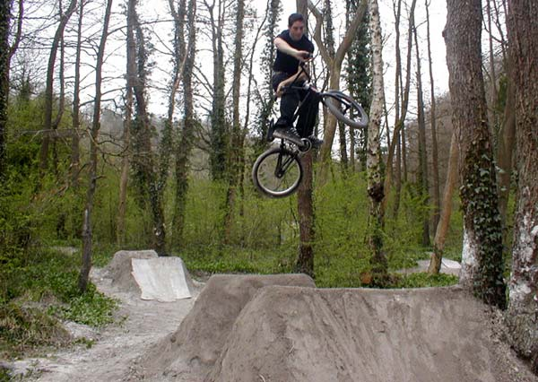

thursday, may 27
ok so here's the deal. simon (www.prettyshady.com) was meant to be coming for a visit tomorrow but he can't come now so i have a 4 day weekend and not much planned. so what do you want to do? are tenterden running yet? trails trip time? maybe build another line in 4 days. ideas on guestbook...
monday, may 24
a few weeks ago the idea of a trail scene in headcorn was a joke. there were two people that rode. things have been changing a bit. saturday johnboy came over and we went to hoggs green. below is johnny on the tabletops. you can see the new line we started. the bowls are {tight}.

john riding the table tops backwards.


then later when the rest of the nation sat inside and watched the fa cup final, about 20 people from paddock wood came over and we just rode for ages it seemed like. there are a lot more pictures - i'll make a propper page soon but it's too nice outside to bother at the moment.
i think this is shane or sean or someone. i forget his name, but he's 11 and he rode the big jump and he almost stacked in a funny way.


john on the big line. chris on the small line. i think most people had tried the main line by the end of the day.


this is a desert plant. it had water trapped in bowls around the stalk. if you see one of these and you are thirsty then you know what to do.

john on the little hip. see, lots of people.

mark and chris were doing the main line first. i chose a picture of mark becasue becky said he was nice cos he was freindly to her.


tim's unturner. the guy below was not riding that good when we got there. he was having some trouble getting through the small line. but the end of the day he was doing these turnbars on the main line. good.

all pictures copywrited to miss rebekah brook 2004.
last night we went back down to hoggs green. some pikeys had tried to knock the new jumps but had done a pretty bad job of it. we repaired them and started the third landing. there were a lot of kids there and i didn't trust them that much - they looked like as soon i was gone they would trash what i had just done. by the end of the evening they had rebuild one of the small jumps, gone home to get a watering can, and got their hands propper muddy trying to get out all the cracks.
work is pretty boring.
monday, may 24
saturday was good. we dug a new line a hoggs green. looks like it will be fun if the pikeys don't wreck it and the council don't mind big jumps. rudi started a new mini pack which looks good.
about a million people from paddock wood came down and we rode the jumps for hours over and over. it was really fun.
monday, may 24

from loser labeled. swings are the new trampolines. tim: find a big tree on a slope. go
monday, may 24
|
*** friends sites. not all of these are bike sites but they are all good. *** http://www.unknowntrailsrider.tk - seb wants his site back soon i think. he rode this weekend. i <3 u sebby g. http://www.thisisabike.tk - rudi came out a lot this weekend and helped dig. he started some jumps in hoggs green too. http://www.pink-cactus.741.com - sophie's site. sophie takes good photos. new. http://uk.geocities.com/justaskateboard/ - adam's skateboarding site. updated which is what you need. http://uk.geocities.com/rip.n.shred@btinternet.com/ - chris' site. he only started it at the weekend so give it a chance. updated lots so far though! |
friday, may 21
Review of Tonbridge Skatepark
friday, may 21
orange should be dry tomorrow if anyone wants to go there. i am not sure if we'll be there. you can ring on 07962 140068
thursday, may 20
new page about the weekend - broken link now fixed.
well yesterday was pretty good. rudi's friend nathan came down to the trail with chris and ashley i think.
nathan rode the second in the big line, so i did as well. it's really smooth and fun. he tried the thrid too but hung up badly on it. he might have cracked his frame which is bad. i think the third should be ok if you pump.
tim went to tonbridge skatepark. more on that later
what plans for the weekend? give me some ideas...
monday, may 17

yesterday we went to the trails in paddock wood. rode a bit and digged a bit. this is the big tabletop. tim was practicing turndowns on it. they were going quite well. the set-up is quite a lot like kiddy. it could be really good down there. keep up the digging.
saturday, may 15
wow, yesterday was good. no time for pictures now. chris and mark from paddock wood came down and then later tom and nigel from tenteden. the modifications at orange are fun and the big line is hard. that will keep up busy for a while. only done the first.
people have been asking where the last video was. its here: http://www.scruffian.com/thisisnotaskateboard/movies/
try easter 2 (big) or easter 4 (small).
i keep having dreaams about the jumps being knocked which is worryingly obsessive.
thursday, may 13

 went to tenterden last night. rode the mini and practiced tyre taps. it's slippy and there is metal right where you want your back wheel to land so you fall over a lot.
went to tenterden last night. rode the mini and practiced tyre taps. it's slippy and there is metal right where you want your back wheel to land so you fall over a lot.
tim went to look at tonbridge park. it's wooden covered so that's good. sounds ok. a hip into the mini sounds good and a box which you have to test i guess. bad thing is a driveway and 2 flat banks but maybe that keeps the skaters away.
there were some weird people at the mini. some little bling kid with loafers and an orange cap. he looks pretty funny. i think he found his clothes in a bin.
i heard something new at maidstone the other day. they are saying that someone had gone all hastings. apparently to go hastings is wearing tight jeans and leather jackets. fashion. great isn't it.

so we went to the trails and met tom and nigel there. helped them dig a bit. the trails are starting to look good now. lots of digging going on. goodstuff.
then we rode a few street spots in tenterden. the fakie tree, the trye tap bank and the tescos ledge.
tom was trying nose picks tailwhips and nigel was doing about a million different tyre tap variations. i realised how bad i am at street. it was fun.
this is nigel on the fakie tree. it's pretty fun. better than anything we have in headcorn. if you are good you can get your front wheel up to where the branches meet the trunk.


wednesday, may 12
so come to the trails on friday if you are close. should be riding if it stays nice. and try the new line. virgin jumps.

some more unriden jumps below. the left one is the second in the main line. it's a big step up now. i rode it once last night. i think it will be nice but it's a bit wet at the moment. the one on the left is the new third. it's a step and hip to the left. looks hard.

 yesterday i met johnboy in maidstone. we went to look a dfs but it was too wet so we went to the park for a bit. martin from sutton valence was there. he's getting good with big turndowns, xup the box backwards and some other good stuff. john was riding the park pretty good. it's not easy on 24in but he was pretty smooth.
yesterday i met johnboy in maidstone. we went to look a dfs but it was too wet so we went to the park for a bit. martin from sutton valence was there. he's getting good with big turndowns, xup the box backwards and some other good stuff. john was riding the park pretty good. it's not easy on 24in but he was pretty smooth.
 then went back to headcorn and played on the trampoline for a bit and went to the trails.
then went back to headcorn and played on the trampoline for a bit and went to the trails.
dug a bit and rode a bit. all my pictures are terrible cos i was riding. but i'll live. see you friday?
monday, may 10
 tonbridge will soon have a new skatepark. the red circle is tim's college. the green circle is the skatepark i think. tim leaves college in about a week or something so he's annoyed.
tonbridge will soon have a new skatepark. the red circle is tim's college. the green circle is the skatepark i think. tim leaves college in about a week or something so he's annoyed.
we need to go here soon. it opens on saturday so maybe make a trip at the weekend or try and break in early on friday. that sounds like fun to me. [clicky]
sunday, may 9

it's not been this wet since january. just digging lots and hoping it dries up soon. went to burham on thursday and took these pictures. i just took them where my bag was so the angles and stuff are bad but who cares. trails trip sounds like a good idea and will happen when the trails are dry and finished. sometime in june i guess. make it happen properly and get a good tour going with lots of riders from tenterden and paddock wood. tonight- more digging.

friday, may 7

my job is to find out where buses go and mark it on a map. kind of. so i get to look at maps all day. this means that when i look at maps and try and work out where trails are then it looks like i am doing work. i was looking at paddock wood. this is where i recon i would build trails. am i right? i really want to go and ride at paddock wood but it's toooo wet. soon.

someone said that there was a mini in chiddingstone green. i couldn't find chiddingstone green but i found chiddingstone hoath and chiddingstone causeway so it's gotta be around here somewhere. also on this map is penshurst station and i think PORC.
wednesday, may 5
so much rain. headcorn is flooded. the new jumps bowls are filled with water till i drained them. managed to fit a bit of riding in on monday before it started to rain again. theres a lot of things wrong with these jumps. the first is too big and they get smaller

monday afternoon was the village fayre in headcorn. it began at 1 and so did the rain we wandered around with rudi and alex and a soggy bit of paper to collect signatures for our skatepark petition. we have about 85 now which is good. just need a few more to push it up to 100.
homemade fisheye.

a dodgy turnback/lookdown attempt. need to lean round more and put the bike more upright and things.

the third in the new line. we used some sand we found to fill in the cracks. it looks better now it's been rained on.

odd colours. we stole this radio and got it dirty.

tim thinks the first is too long. it's longer than the second and third but then it's a lot less steep so i think you want it a bit longer

tuesday, may 4
this time last year. it was raing then as well. and enjoitrails stole that picture off stu:
040503
i am missing my camera.
yesterday was mostly bad and a bit good. we had just sorted out getting permission to dig at the good trails, when some woman comes along and moans about us digging up her bulbs. we told her we has permission from the land owner, but she claimed that it was her land not his and told us to put it back...
the only good thing was riding the other trails. they were flowing quite well and some guys from some other trails not to far came down for a look on their way to a party. they're coming back to ride on monday, which should be fun.

this picture is from we hate the council. i don't hate the council here, but i do like the photo! go to the site
020503
in preparation for going back to uni to do exams for 2 weeks i have taken the appropriate steps to allow the site to be updated from geocites. pretty isn't it.
things are kind of good and kind of bad. the rain is good cos you can build but bad cos you can't ride. revision is bad and a broken camera is bad, but headcorn is slowly getting good. more on that later
i haven't got a lot of time for updates and stuff what with exams but i guess a lot of people are in the same position. in which case, go and revise instead of looking at my site! i finish sooner than some people though, so hopefully i can be keeping your revision filled days entertained with some riding pictures when i am done.
sunday, may 2
it's amazing what you can do in 2 days.

we started these from scratch on thursday night and this picture was taken saturday afternoon. hopefully they will be rideable tomorrow. these are 2 and 3 in the line. jam soon maybe.